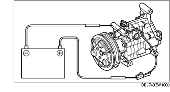
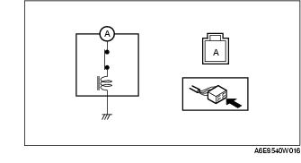

Magnetic clutch inspection 1. Connect battery positive voltage to terminal A of magnetic clutch and ground to A/C compressor body.  2. Verify that the magnetic clutch operates. • If there is any malfunction, replace the stator and thermal protector.